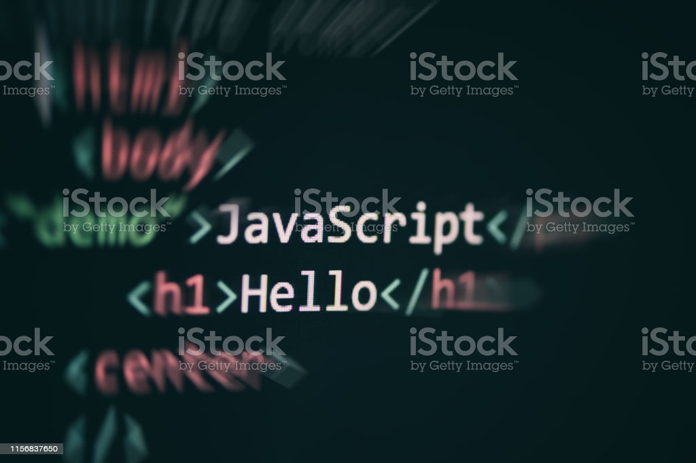
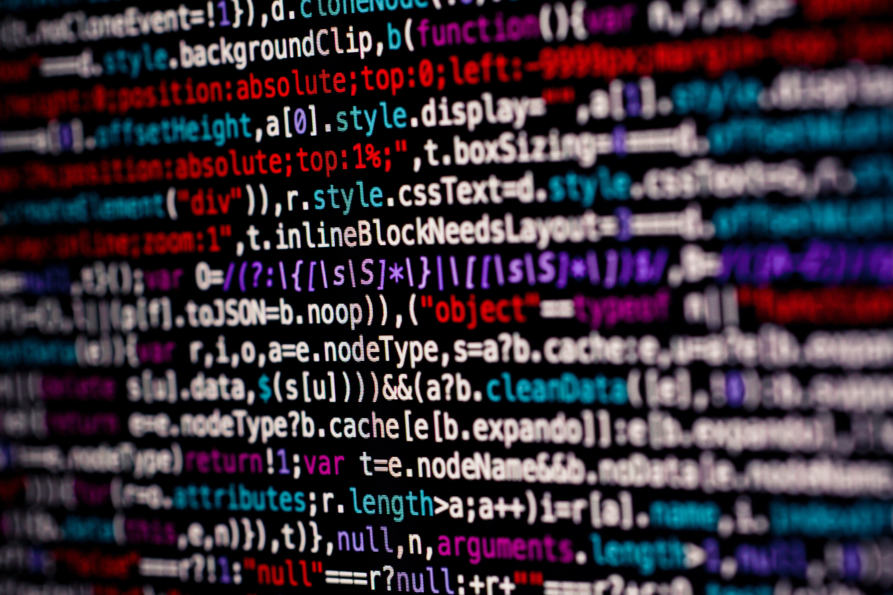

Nesta página você encontrará as melhores dicas para iniciar uma aplicação. Você verá como é legal programar!
JAVASCRIPT

É uma linguagem de script orientada a objetos, multiplataforma. É uma linguagem pequena e leve. Dentro de um ambiente de host (por exemplo, um navegador web) o JavaScript pode ser ligado aos objetos deste ambiente para prover um controle programático sobre eles. JavaScript tem uma biblioteca padrão de objetos, como: Array, Date, e Math, e um conjunto de elementos que formam o núcleo da linguagem, tais como: operadores, estruturas de controle e declarações. O núcleo do JavaScript pode ser estendido para uma variedade de propósitos.
CSS (Cascading Style Sheets ou Folhas de Estilo em Cascata)

É uma linguagem de estilo (en-US) usada para descrever a apresentação de um documento escrito em HTML ou em XML (incluindo várias linguagens em XML como SVG, MathML ou XHTML). O CSS descreve como elementos são mostrados na tela, no papel, na fala ou em outras mídias. CSS é uma das principais linguagens da open web e é padronizada em navagadores web de acordo com as especificação da W3C. Desenvolvido em níveis, o CSS1 está atualmente obsoleto, o CSS2.1 é uma recomendação e o CSS3, agora dividido em pequenos módulos, está progredindo para a sua padronização.
HTML (Linguagem de Marcação de HiperTexto)
É o código que você usa para estruturar uma página web e seu conteúdo. Por exemplo, o conteúdo pode ser estruturado em parágrafos, em uma lista com marcadores ou usando imagens e tabelas. Como o título sugere, este artigo fornecerá uma compreensão básica do HTML e suas funções. HTML não é uma linguagem de programação; é uma linguagem de marcação, usada para definir a estrutura do seu conteúdo. HTML consiste de uma série de elementos, que você usa para delimitar ou agrupar diferentes partes do conteúdo para que ele apareça ou atue de determinada maneira. As tags anexas podem transformar uma palavra ou imagem num hiperlink, pode colocar palavras em itálico, pode aumentar ou diminuir a fonte e assim por diante.
Linguagem C
Criada pelo cientista da computação Dennis Ritchie em 1972, a linguagem C é derivada das antigas ALGOL 68 e BCPL. Ela surgia da necessidade de escrever programas de maneira mais fácil que a linguagem Assembly (mais próxima do código de máquina e, portanto, mais complexa de se entender). No ano seguinte à sua criação, C é usada para escrever uma versão do sistema operacional Unix e, com isso, passou a ganhar notoriedade. Mas foi a partir do ano de 1978, com a publicação do livro “The C Programming Language”, que a linguagem passou a ser difundida no mercado, sendo utilizada também em outras áreas e para outros fins na programação de computadores. Vantagens da linguagem C: Por ser estruturada, a linguagem C torna o processo de desenvolvimento mais simplificado. Fácil portabilidade Simples, pois conta com um conjunto de bibliotecas de funções e sub-rotinas que auxiliam no desenvolvimento de sistemas. Provê recursos também de baixo nível, permitindo a incorporação de códigos Assembly. Hoje em dia, além de grande parte dos sistemas operacionais existentes no mercado serem escritos em C, a linguagem também é muito utilizada no desenvolvimento de interpretadores, compiladores, editores de texto, softwares de computação gráfica e tratamento de imagens, banco de dados e entre outros.
Linguagem C++
Como o próprio nome já nos permite concluir, C++ é uma linguagem baseada em C, criada na década de 80 por Bjarne Stroustrup. Inicialmente, o objetivo do cientista da computação era desenvolver uma nova versão do Kernell (núcleo) do sistema operacional Unix e, para isso, escolheu a linguagem C como base. Sua escolha foi devido à performance, portabilidade e possibilidade de uso para diversos fins. Durante o desenvolvimento, Stroustrup implementou diversas melhorias à linguagem C, incluindo alguns recursos de orientação a objetos. A linguagem criada pelo cientista da computação recebia, inicialmente, o nome de “C com classes”. Entretanto, 3 anos mais tarde passou a ser chamada de C++.